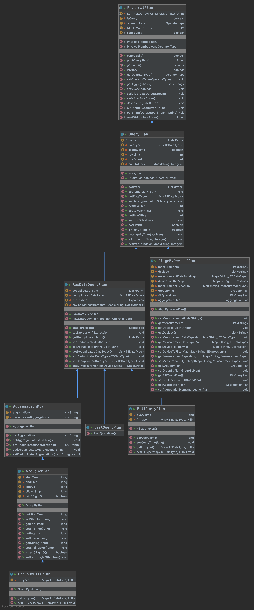

QueryPlan类：
QueryPlan是有关查询相关的类，所有的plan都继承了PhysicalPlan这个虚类，QueryPlan也是一个虚类。其UML类图如下所示：

BatchData类：
封装了存取数据的一些操作。
本质上是一个二维的数组List<Object[]>，第一维是list，长度可变，长度无限制；第二维是长度初始为16，最大为1000的数组，在没超过阈值1000的情况下，会以2倍的速度扩张。如果达到了阈值1000，则会调用list.add(Object[])，此时object数组的长度就是1000了。
SeriesReader类分析
参考http://iotdb.apache.org/zh/SystemDesign/5-DataQuery/2-SeriesReader.html
数据按照粒度从大到小分成五种：文件，TimeSeriesMetadata，Chunk，Page，相交数据点。在原始数据查询中，最大的数据块返回粒度是一个 page，如果一个 page 和其他 page 由于乱序写入相互覆盖了，就解开成数据点做合并。聚合查询中优先使用 Chunk 的统计信息，其次是 Page 的统计信息，最后是相交数据点。
设计原则是能用粒度大的就不用粒度小的。
SeriesReader类中几个重要的字段：1
2
3
4
5
6
7
8
9
10
11
12
13
14
15
16
17
18
19
20
21
22
23
24
25
26
27
28
29
30
31
32
33
34
35
36
37
38
39
40
41
42
43
44
45
46
47
48
49/*
* file cache，文件层的cache，分别保存了顺序和乱序的一些文件描述
*/
private final List<TsFileResource> seqFileResource;
private final List<TsFileResource> unseqFileResource;
/*
* TimeSeriesMetadata cache
*/
// 第一个TimeSeriesMetadata，这个是开始时间最小的那个timeseriesMeta
private TimeseriesMetadata firstTimeSeriesMetadata;
// 保存了顺序文件的TimeseriesMetadata
private final List<TimeseriesMetadata> seqTimeSeriesMetadata = new LinkedList<>();
// 保存了乱序文件的TimeseriesMetadata，是一个优先级队列，按照开始时间排序
private final PriorityQueue<TimeseriesMetadata> unSeqTimeSeriesMetadata =
new PriorityQueue<>(Comparator.comparingLong(timeSeriesMetadata -> timeSeriesMetadata.getStatistics().getStartTime()));
/*
* chunk cache
*/
// 开始时间最小的那个chunkMetaData
private ChunkMetadata firstChunkMetadata;
// 按照开始时间的一个优先级队列，保存ChunkMetaData。
private final PriorityQueue<ChunkMetadata> cachedChunkMetadata =
new PriorityQueue<>(Comparator.comparingLong(ChunkMetadata::getStartTime));
/*
* page cache
*/
// 开始时间最小的那个VersionPageReader
private VersionPageReader firstPageReader;
// 按照开始时间的一个优先级队列，保存的VersionPageReader。
private PriorityQueue<VersionPageReader> cachedPageReaders =
new PriorityQueue<>(Comparator.comparingLong(VersionPageReader::getStartTime));
/*
* point cache
*/
// 相交数据点层
private PriorityMergeReader mergeReader = new PriorityMergeReader();
/*
* result cache，相交数据点产出结果的缓存
*/
// 是否缓存了下一个batch
private boolean hasCachedNextOverlappedPage;
// 缓存的下一个batch的引用
private BatchData cachedBatchData;
重点函数分析
基本上读操作的流程如下：1
2
3
4
5
6
7
8
9while (seriesReader.hasNextFile()) {
// do something
while (seriesReader.hasNextChunk()) {
// do something
while (seriesReader.hasNextPage()) {
// do something
}
}
}
下面就会分析上述三个方法。
hasNextFile
判断本文件是否读完：如果firstPageReader还没读完，或是相交数据点还有数据，或是cachedPageReaders不为空，则说明上一个文件还未读完。则抛出异常。
判断本chunk是否读完：如果firstChunkMetadata != null||!cachedChunkMetadata.isEmpty()，则抛出异常。
判断是否还有文件。如果firstTimeSeriesMetadata != null，则返回true，否则执行第4步。
走到这里说明已经解开的page、chunk、page都读完了，所以需要解(unpack)下一个文件，会调用tryToUnpackAllOverlappedFilesToTimeSeriesMetadata函数解下一个文件。
第4步解完数据之后，在判断firstTimeSeriesMetadata != null，决定是否还有文件。
hasNextChunk
主要功能：判断该时间序列还有没有下一个chunk。
约束：在调用这个方法前，需要保证 SeriesReader 内已经没有 page 和 数据点 层级的数据了，也就是之前解开的 chunk 都消耗完了。
- 判断文件是否读完：与hasNextFile步骤1一致。(代码写的不好，没有把这个判断条件封装为一个函数)
如果 firstChunkMetaData 不为空，则代表当前已经缓存了第一个 ChunkMetaData，且未被使用，直接返回true；
尝试去解开第一个顺序文件和第一个乱序文件，填充 chunk 层。并解开与 firstChunkMetadata 相重合的所有文件。原理与解开TimeSeriesMetadata一致。
tryToUnpackAllOverlappedFilesToTimeSeriesMetadata
解压所有重叠的seq/unseq文件，找到第一个TimeSeriesMetadata，因为在用户使用的场景中可能有太多的文件，无法一次性把所有的文件都打开，这可能导致OOM，所以一次只解压缩一个文件。
填充seqTimeSeriesMetadata，直到它不为空。如果seqTimeSeriesMetadata为空，则按序遍历seqFileResource，去获取此文件的timeseriesMetadata，直到找到一个timeseriesMetadata!=null, 然后加入到seqTimeSeriesMetadata中。备注：此时seqTimeSeriesMetadata长度长度为1
同理填充unSeqTimeSeriesMetadata，直到它不为空。
找出seqTimeSeriesMetadata和unSeqTimeSeriesMetadata两个中，开始时间最早的那个timeseriesMetadata。
然后调用unpackAllOverlappedTsFilesToTimeSeriesMetadata函数，遍历所有的seqFileResource和unseqFileResource，找出所有的和第3步的timeseriesMetadata有重叠的timeseriesMetadata，分别填充到seqTimeSeriesMetadata和unSeqTimeSeriesMetadata。
- 重叠的定义如下：只要这个file的开始时间小于第三步找到的那个timeseriesMetadata结束时间，则认为数据在时间上有重叠的。
从填充的seqTimeSeriesMetadata和unSeqTimeSeriesMetadata中，找出开始时间最早的那个作为firstTimeSeriesMetadata。(个人认为其实没必要，因为在第3步中已经找出来了)